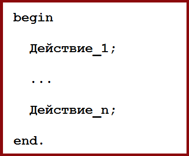
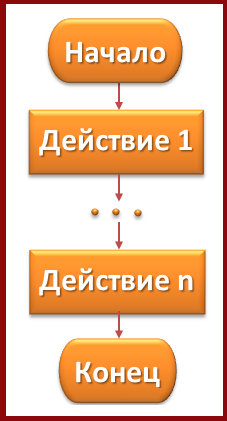
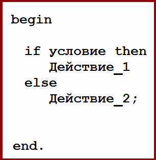
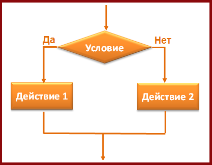
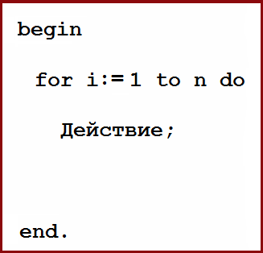
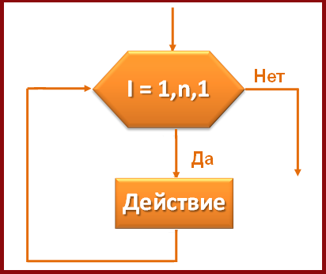
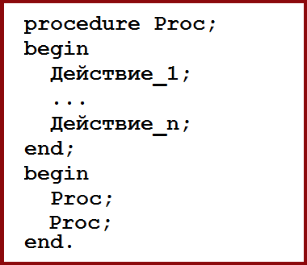
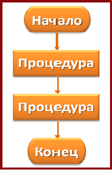

Линейный алгоритм - это алгоритм, в котором действия выполняются строго последовательно
|  |  |
Алгоритм с ветвлением - это алгоритм, в котором в зависимости от условия выполняется то, либо иное действие.
|  |  |
Если условие ветвления истинно, то выполняется Действие 1, в противном случае выполняется Действие 2
Цикличесий алгоритм - это алгоритм, в котором действия выполняются опеределенное количество раз.
|  |  |
На рисунке видно, что Действие будет выполняться n раз, т.е. пока условие i <= n истинно.
При решении некоторых задач бывает удобно разбить их на подзадачи, каждую из которых можно оформить как самостоятельный алгоритм.
|  |  |
Каждый такой алгоритм называется подпрограммой (процедурой). Процедуру в основной программе можно вызывать неоднократно.